VersionUp
A Premiere Pro panel that versions a sequence in one click – archives the old copy, keeps your bin structure, and leaves you working on the sequence you were already on.
Overview
Versioning a sequence by hand is four steps – duplicate, rename, drag into a folder, and try to remember which one the client approved. VersionUp does it in one click.
The part that matters most: most tools move you onto a new copy and leave you hunting for it. VersionUp renames the sequence in your timeline and archives the duplicate instead. Your open tab never changes. The sequence you can see is the sequence you are working on, always.
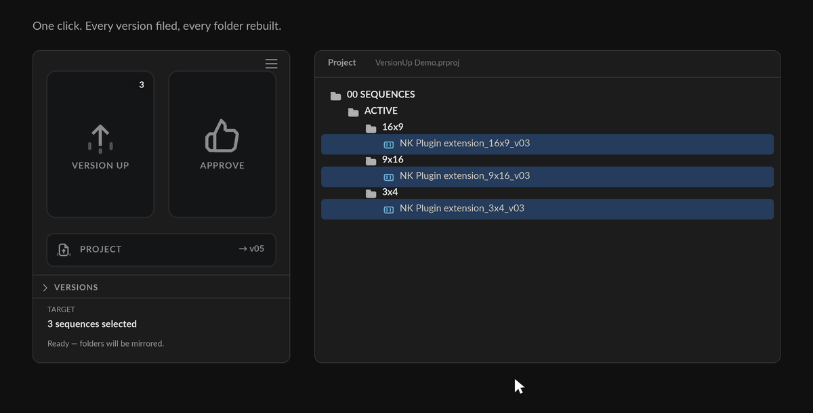
Three buttons, and each one says what it is – Version up, Approve and Project. Nothing here needs learning: the words are on the buttons, and resting on one shows you the exact name it is about to write.
Requirements
| Premiere Pro | 25.6 or newer. Check under
Premiere Pro > About Premiere Pro. Earlier versions cannot run it – VersionUp
uses Adobe's current plugin system (UXP), and there is no build for older releases. |
|---|---|
| System | macOS or Windows. |
| Licence | One key covers two machines – a desktop and a laptop. A Studio key covers ten. |
Install and activate
The short version:
- Open the order email from NK Courses. It has your licence key and the download link.
- Download
VersionUp.ccxand double-click it. Creative Cloud Desktop installs it for you – nothing to unzip. - Quit Premiere Pro and open it again. Premiere only looks for new panels at startup.
- Window > UXP Plugins > VersionUp.
- In the panel, open the ☰ menu > Help & licence, paste your key and press Activate.
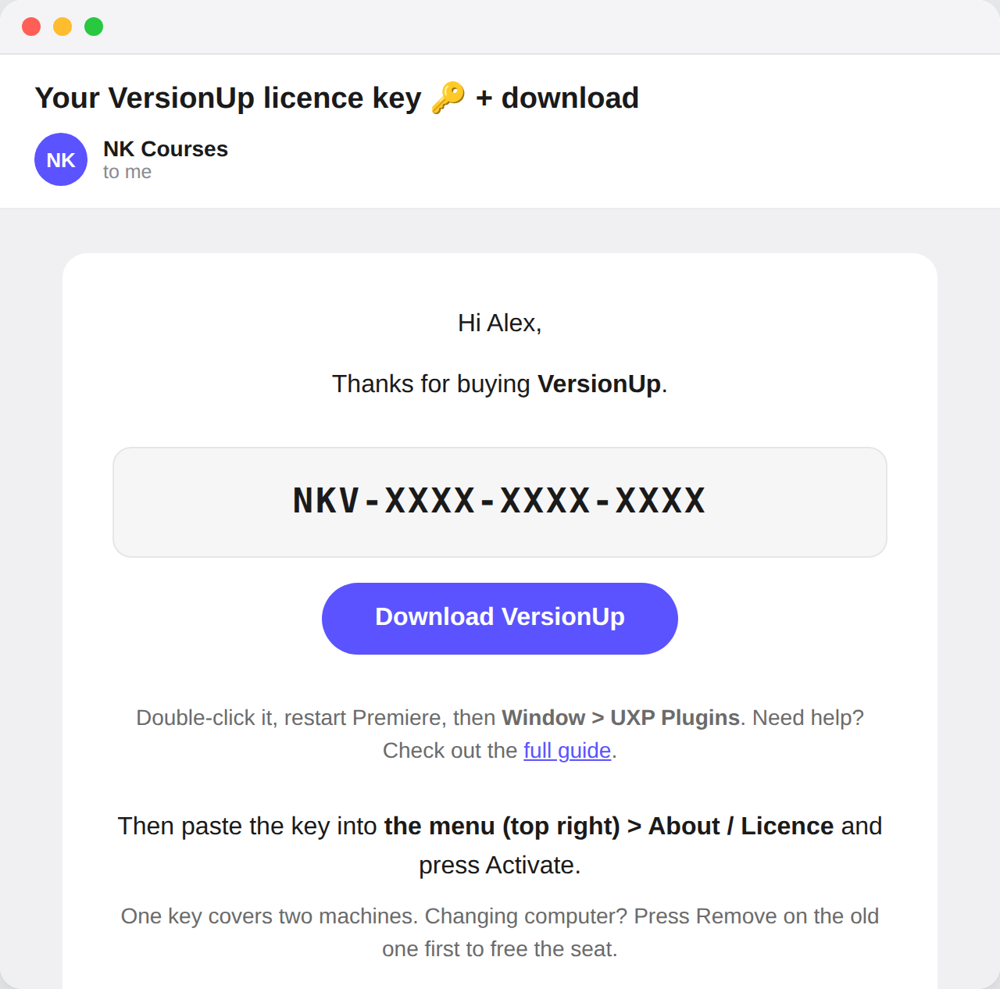
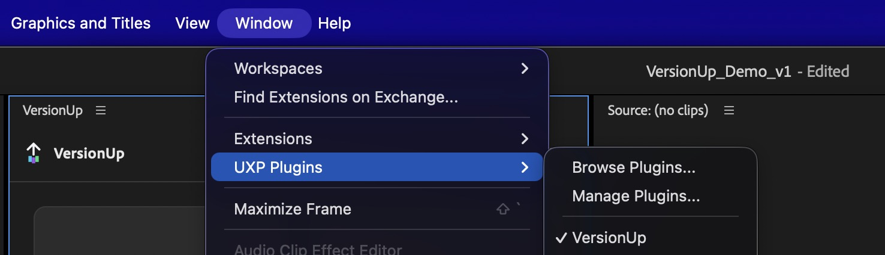
Double-clicking did nothing? Open Creative Cloud Desktop first, then double-click the file again. Still nothing, or a message saying Creative Cloud cannot open it? Install it from Terminal or Command Prompt instead.
Quick start
- Open a project and select a sequence, or just have one open in the timeline.
- Press Version up.
- Look at your Project panel: the previous version is now in a
_PREVIOUSbin with a colour label, and the sequence in your timeline has the new number.
That is the whole loop. Everything below is detail.
Version up
Duplicates the sequence, bumps the number, and files the old copy away with a colour label. Four fiddly steps become one.
Your folder structure is rebuilt inside the archive, not flattened. A 9x16
archived from a 9x16 bin lands in a 9x16 bin inside _PREVIOUS – not in one flat heap
at the bottom of the project.
Four ways to click Version up
Hold a key as you click and Version up does something different. The symbol on the button changes the moment you hold the key, so you can see which one you are about to get before you press anything.
| Symbol | Click | What it does | Example |
|---|---|---|---|
| Click | The next version. The old one is filed in _PREVIOUS and you stay in the sequence you are cutting. | Brand Film_v03 → Brand Film_v04 | |
| Alt-click Option on a Mac | An alternative. A copy beside the original, filed in an ALT bin and opened. The original is not renamed or moved. | Brand Film_v03 → Brand Film_ALT_v03 | |
| Shift-click | A new major version, for when the brief changes rather than the trim. The minor number starts again at 1. | Cut_v4.4 → Cut_v5.1Brand Film_v03 → Brand Film_v04.1 | |
| Cmd-click Ctrl-click on Windows | Your own naming pattern, from Settings → Naming. The pattern needs {version} in it. | Pattern {client}_{project}_{name}_{version}, Client ACME, Project Harbour:Brand Film → ACME_Harbour_Brand Film_v01 |
Rest on the button for a second and the panel lists all four with the real names it would write for the sequence you have selected, and lights the row for the key you are holding. Holding Alt and Shift together makes an alternative – Alt wins.
Choosing what to version
| Select nothing | Versions the sequence open in your timeline. |
|---|---|
| Select sequences | Versions every one you selected in the Project panel. |
| Select a bin | Versions everything inside it, at any depth. |
A batch is planned against the current state of the project as it goes, so twenty at once can never collide with itself. One failure does not stop the rest.
Approve
One click marks the cut the client signed off: moves it into your approved bin, colours it
green, and renames it – Brand Film_MASTER. Findable from the Project panel weeks
later without opening the panel at all.
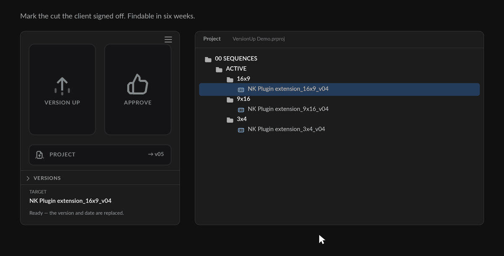
Approving an old version is allowed, on purpose. Clients sign off v03 while you are already on v05. The approval marker replaces the version and date, because an approved cut is a deliverable rather than another rung on the ladder.
Press it twice and nothing bad happens. Already approved means re-coloured, not re-moved.
Project
Versions the .prproj itself – Job_v01.prproj becomes
Job_v02.prproj, and the new file becomes the one you are working in.
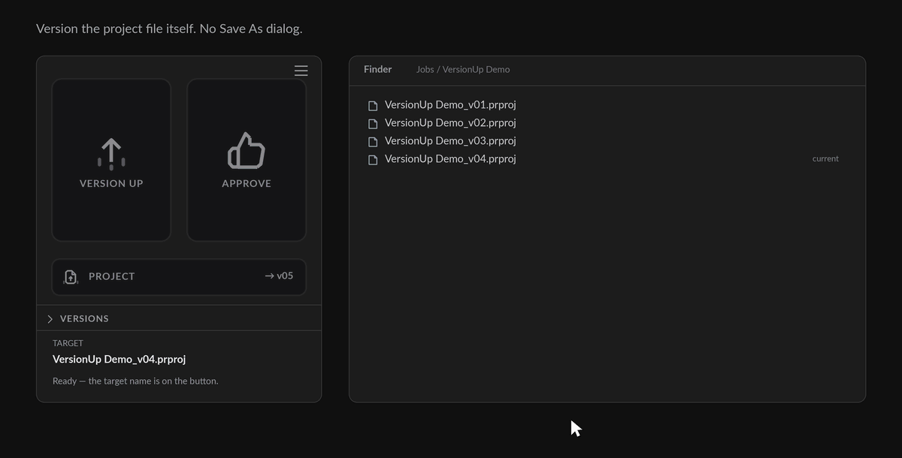
This one cannot be undone. Everything else in VersionUp is a single Undo (Cmd+Z, or Ctrl+Z on Windows); saving a project writes a file. That is why the button shows you the name it is about to use.
It will not save over a project that already exists. Because the write cannot be undone, a click that would land on a filename already on disk is stopped and the panel says so, rather than quietly replacing a day’s work.
The Project button takes the same modifier keys as Version up, plus one of its own:
| Click | The next project version – Job_v03.prproj |
|---|---|
| ⌥ Alt-click | An alternative – Job_ALT_v03.prproj, beside
the original. Also works when the guard is blocking an old project file. |
| ⇧ Shift-click | A new major – Job_v04.1.prproj |
| ⌘ Cmd-click (Ctrl-click on Windows) | Shows the current project’s folder. Nothing is written. |
Your version history
At the foot of the panel is a Versions strip. It starts closed; click it to open. It lists what VersionUp has made and when, so you can answer “when did I last version this?” without going anywhere near the Project panel.
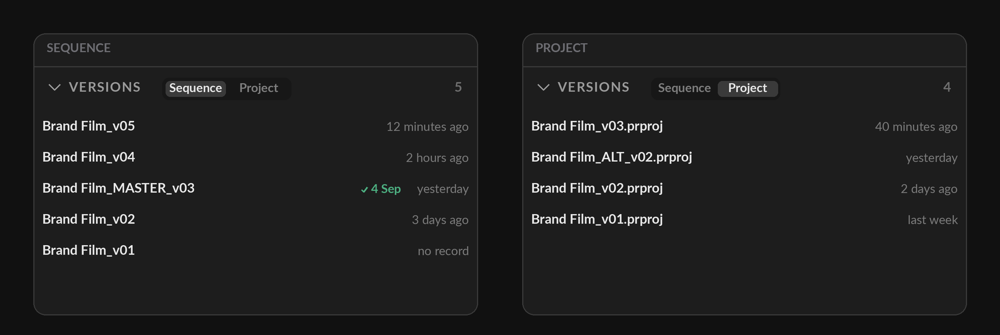
- Sequence and Project tabs appear once there is something in both.
- A green tick marks a cut that was approved, with the date it happened.
- Click a sequence row to open that sequence in the timeline. The one you are in now is marked with a blue edge.
- Click a project row to show that file’s folder, with its full path copied to your clipboard.
It only knows what it did itself. A version you made by hand, or one from before you installed VersionUp, shows as no record rather than a guess. If a cut merely carries your approved suffix in its name, it gets a tick with no date – recognised, not remembered.
You can put it away. Settings → Panel → Show version history. It is on to start with; turn it off and the strip goes, giving that height back to the buttons – useful if you keep the panel docked short. Nothing is forgotten: VersionUp carries on recording, and switching it back on shows everything it made while the strip was hidden.
The wrong-version guard
Open an old sequence by mistake and an amber banner says so, names the newer version, and offers to jump you straight to it.
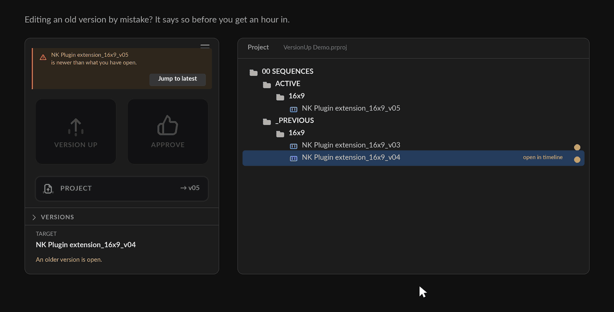
It watches the project file too
Open Job_v02.prproj from your recent files while Job_v04.prproj sits in
the same folder, and the same amber banner says so: You’re in Job_v02.prproj.
Job_v04.prproj is newer.
Show folder opens the folder the newer file is in and copies its full path to your clipboard, so you can open it straight away. VersionUp does not open it for you – it shows you where it is.
While you are in the older file, the Project button won’t version it. If you really do mean to work from the old one, Alt-click Project to branch an alternative from it on purpose.
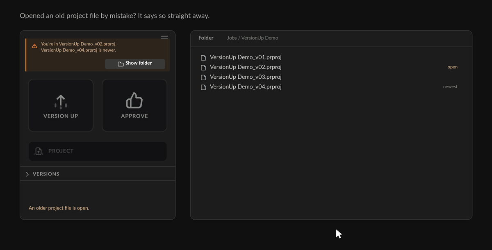
Both checks follow one switch: Settings → Panel → Block VersionUp on an old version. It is on to start with. Turn it off and the banner still warns you, but nothing is blocked.
Alt-click: an alternative
Hold Alt – Option on a Mac – and click Version up. Instead of advancing
the version, VersionUp makes a copy, Brand Film_ALT_v03, files it in an
ALT bin and opens it, so you carry on in it. The original is not renamed and not
moved.
For the version of a cut you want to try without giving up the one you have.
Alt-click Project does the same thing to the project file –
Job_ALT_v03.prproj beside the original. Showing the project’s folder moved to
⌘ Cmd-click (Ctrl-click on Windows) so that Alt could mean the same
thing on every button.
Rest on any button for a second and the panel shows you what each key does – with the real name it would write, not a placeholder – and lights the row for the key you are actually holding.
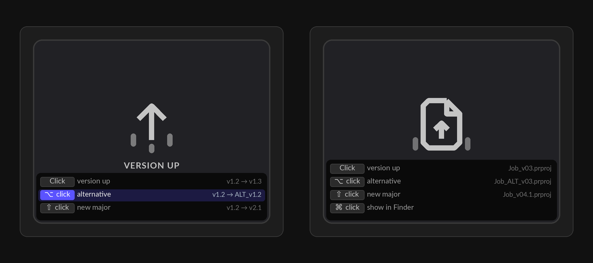
If a row never lights up, that key is not reaching the panel. Alt is the one to rely on. Premiere does not always pass Cmd and Shift through to a plugin panel, so the panel still lists them but cannot promise them on every system – and showing a project’s folder is also one click on its row in the Versions strip, with no key held at all.
Shift-click: a major version
Hold Shift and click Version up. Cut_v4.4 becomes
Cut_v5.1 instead of Cut_v4.5 – a new major version, with the minor
number back at 1.
For the cut that has been through four rounds of notes and is now a different edit, rather than the next revision of the same one.
If your names have no major part, Shift makes one. Brand Film_v03
becomes Brand Film_v04.1, and ordinary clicks after that run v04.2,
v04.3 and so on.
It works whatever naming format you use. With a custom pattern, Shift keeps the
name you have and raises its number – Brand Film_v03 becomes
Brand Film_v04.1. The only name it can't raise is one with no version number in it,
and it says so and changes nothing.
Holding Alt and Shift together makes an alternative. Alt wins, and the panel says so while you are holding them.
While it is working
Press a button and it dims and reads WORKING… until Premiere has finished. The count stays on screen, so you can still see how many sequences it is working through.
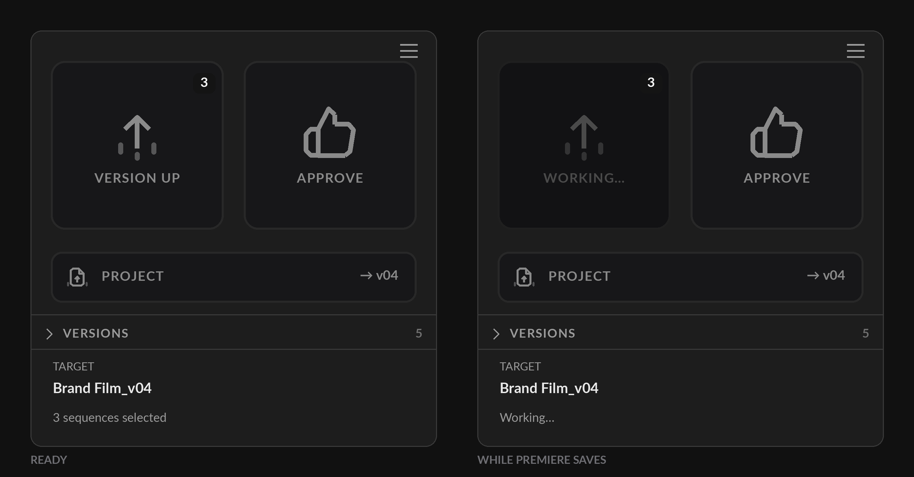
It does not spin, and that is deliberate. Premiere stops the panel completely while it duplicates and saves – nothing in it can move, including a spinner. A frozen animation reads as a crash; a button that plainly says it is working does not.
Naming and tokens
☰ > Settings → Naming. There is one row for each way you press: Click, ⌘-click (Ctrl-click on Windows) and Alt-click on Project (Option-click on a Mac). Each row shows the exact name that press will make. Every row starts closed – click a row's arrow to open it and change it.
Names are built from tokens. Tap one to drop it into the pattern you are editing – the
row of tokens always sits under that box. {dimensions} is not offered for a project
file, which has no frame size. A pattern only contains what you put in it, so leave out
{name} and the sequence's own name is not in the result.
| Token | Becomes |
|---|---|
{name} | The sequence's own name |
{version} | v01, v02, v03… |
{project} | The project file's name, unless you type another in the Project box |
{client} | Whatever you type in the Client box |
{initials} | Yours, from the Initials box |
{date} | Today, in the order you choose |
{time} | The current time |
{dimensions} | The sequence's frame size, e.g. 1920x1080 |
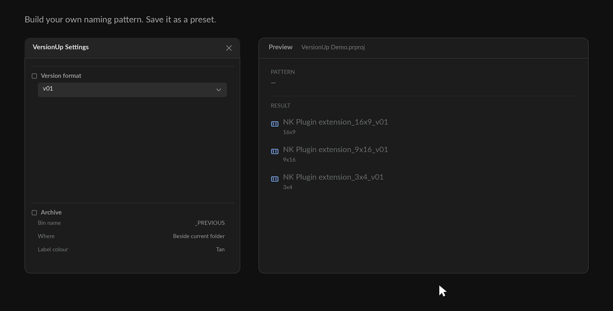
{dimensions} is the one worth knowing about: a 1080x1920 and a 1920x1080 name
themselves apart without you typing anything.
Save as preset… keeps a ⌘-click pattern by name, and it joins the Click format list for when you want it on a plain click too. Or leave the defaults alone – they are sensible.
Project version names
Alternatives of the project file get their own pattern, in the Project section of Settings → Naming, with the same tokens as above.
Six ready-made presets cover most of it – ALT + version,
ALT + date, ALT + date + time, ALT + date + version,
Name + ALT + version, or the built-in naming. Pick one and the pattern fills itself
in; edit it afterwards and your edit stands.
{dimensions} is not offered here. A .prproj has no frame size, so a
token for it would only ever come out blank.
Client, Project and Initials live under Name details, shared by every pattern.
Client and Project are saved with each project file; your initials are the same everywhere. A
Date row appears there whenever a pattern uses {date} or {time}.
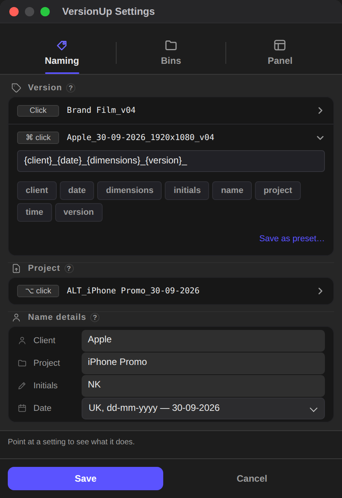
Bins and colours
Call the bins what you already call them. _PREVIOUS and APPROVED are
just defaults – change them in Settings → Bins and VersionUp uses yours.
Label colours for archived and approved sequences are yours too, so old versions stay visually distinct at a glance in the Project panel.
Hiding buttons and docking
Hide the buttons you don’t use. Any of the three, Version up included. Turn one off in Settings → Panel and the panel reshapes around what is left – two side by side, or one taking the whole panel – with no empty band where a button used to be.
The last button on cannot be switched off. A panel with nothing on it has no obvious way back.
It fits any dock. Four layouts, and you never choose between them – the panel picks whichever one fits as you drag it.
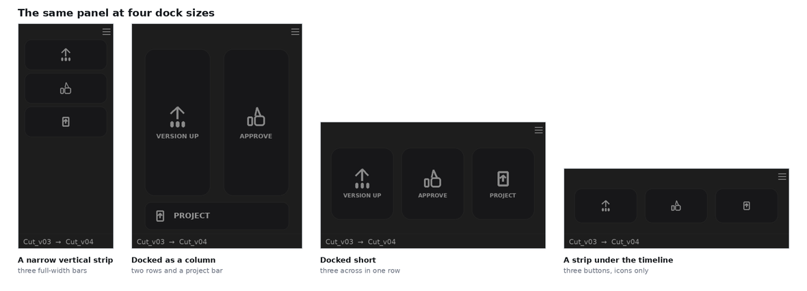
- Two rows and a project bar. The full layout. Version up and Approve fill the panel with their names under them, and Project sits as a wide bar underneath showing the filename it would write.
- Three full-width bars. Docked as a narrow vertical strip beside your timeline, each button takes the whole width with its name beside the symbol, rather than three squares squeezing across.
- Three across in one row. Wide but short – no room for the bar as well as the buttons, so Project joins the other two as a third named tile.
- Icons only. Squeeze past either of those and the words step aside – all three together, never some of them – leaving the symbols.
There is a floor. Below the width at which a button can still hold its symbol, the buttons do not keep shrinking – they step aside too, and the panel shows WIDER until you give it room again. Nothing is lost and nothing is switched off; drag the edge back and the buttons return exactly as they were.
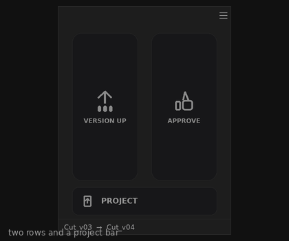
Parked as a narrow column beside the timeline is what it was built for. If you only ever use Version up, turn the other two off in Settings → Panel and it will happily live in a strip barely taller than one button – and if Version up is the one you never press, that can go instead.
Your licence
One key, two machines – a desktop and a laptop, or a work machine and a home one. One payment, no subscription.
Studio licence: one key for up to ten machines, for a team or an edit suite. Everyone activates the same key the same way, and the Help & licence window shows how many of the ten are in use. Remove works exactly as below.
Changing computer? Open ☰ > Help & licence on the machine you are leaving behind and press Remove. That frees the seat immediately, so you can activate the new one straight away.
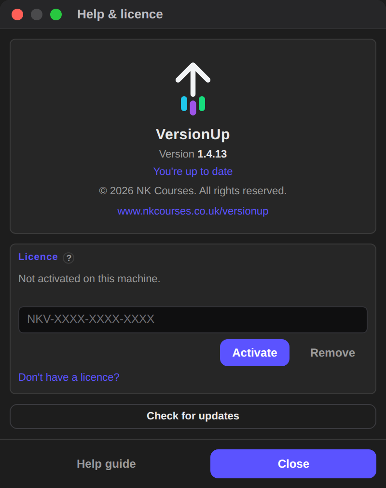
Updates
VersionUp tells you when there is a new version – a quiet bar at the top of the panel, never a nag. Wave it off and it stays out of the way; it will not pester you about the same version twice.
Updates are free. Download the new .ccx from the link in your licence email, double-click
it, and restart Premiere. Your licence key stays activated.
☰ > Help & licence checks straight away, every time you open it, and says under the version number whether you are up to date. Use it if you have heard a new version is out and the panel has not mentioned it – the automatic check runs at most once a day, so there is a window where a release exists and your copy has not looked yet. Press Check for updates at the bottom of the window to ask again at any time: the answer appears in its place, telling you whether you're on the latest version, and if there is a newer one it offers What's new.
Release history
Every version, newest first.
Loading the release history…
Sending feedback
☰ > Send feedback. Tell me it's a bug, a feature request or a testimonial, write what happened, and press Send. Your email is optional, but without it I cannot reply.
Pick Testimonial and two more boxes appear: who to credit, and a switch saying I may quote you on the website. Nothing is ever quoted without that switch turned on, and you are welcome to send kind words with it off.
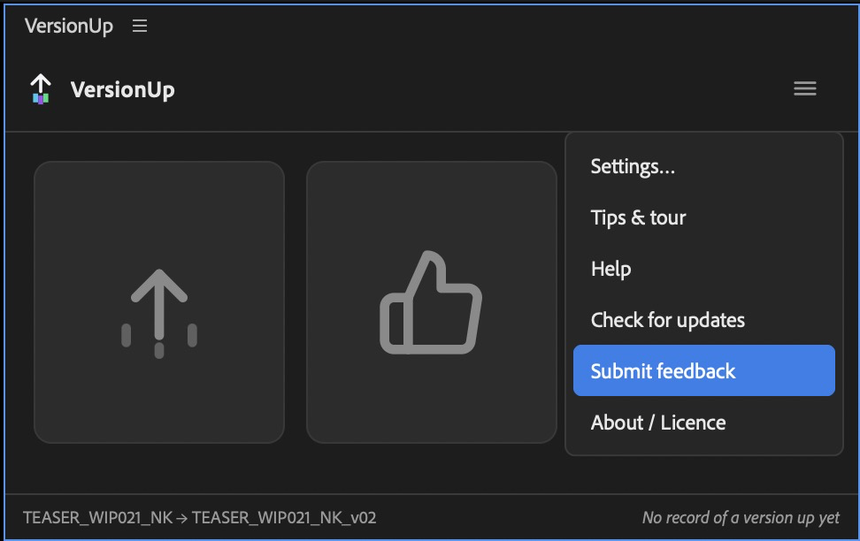
One report per thing, please. And if something happens twice, say so – knowing a fault is repeatable is worth more than a long description of it.
What is and isn't collected
VersionUp does not collect or transmit any project data, file names, or usage data. Feedback is sent only when you click Send – it includes your message, your optional email, your operating system and the app version.
Nothing is sent in the background, and nothing about your projects, sequences, bins or clients ever leaves your machine. The panel talks to the network for exactly two things: checking your licence key, and checking whether an update exists.
Troubleshooting
Double-clicking the .ccx did nothing, or said “Creative Cloud cannot open files of this type”
Creative Cloud Desktop has to be installed and signed in. Open it first, then double-click the file again. That fixes most cases.
Still not working? Your Mac or PC has lost track of which Adobe app opens .ccx files. Nothing is wrong with the file. Install it with Adobe’s own plugin installer instead, the same one Creative Cloud uses behind the scenes. Quit Premiere first.
Mac: open Terminal (Applications > Utilities), paste this, type a
space, then drag VersionUp.ccx into the Terminal window and press Return:
"/Library/Application Support/Adobe/Adobe Desktop Common/RemoteComponents/UPI/UnifiedPluginInstallerAgent/UnifiedPluginInstallerAgent.app/Contents/MacOS/UnifiedPluginInstallerAgent" --install
Windows: open Command Prompt (not PowerShell), paste this, type a
space, then drag VersionUp.ccx into the window and press Enter:
"C:\Program Files\Common Files\Adobe\Adobe Desktop Common\RemoteComponents\UPI\UnifiedPluginInstallerAgent\UnifiedPluginInstallerAgent.exe" /install
Dragging the file in types its exact location for you, wherever it was saved. When it finishes, restart Premiere and look under Window > UXP Plugins. Still stuck? Email me and I will sort it with you.
VersionUp isn't in the Window menu
Check Premiere Pro > About Premiere Pro – VersionUp needs 25.6 or
newer. And look under Window > UXP Plugins, not Window >
Extensions; that menu is for the older kind of plugin.
My licence key was refused
Re-copy it – a trailing space is the usual culprit. If you have used both machines, press Remove on one you no longer use to free the seat.
The buttons are greyed out
Either there is no licence key activated yet, or there is no project open. Add your key in ☰ > Help & licence.
Only the Project button is grey? You are probably in an older project file and a newer one is sitting in the same folder – see It watches the project file too. The amber banner at the top of the panel says which file is newer.
There is no trial or free mode. Until a key is activated, all three buttons are disabled and the panel does nothing – so if you have just installed it and everything is grey, that is the licence, not a fault.
Nothing happened when I pressed a button
If the button is greyed and reads WORKING…, it is running – give it a moment. Premiere stops the panel while it saves, so nothing on screen can move until it is done.
Otherwise, open the log at the bottom of the panel – it says what ran and what it did. If the button was greyed out before you pressed it, either nothing was selected, or a newer version of that sequence already exists and VersionUp is refusing to branch off an old one.
The Versions list says “no record”
That version was not made by VersionUp – renamed by hand, or made before you installed it. The panel says so rather than inventing a date. Everything you version from here on will be listed.
Cmd-click (Ctrl-click on Windows) or Shift-click does nothing
Premiere does not pass every modifier key through to a plugin panel on every system. Rest on the button first: if the row for that key never lights up while you hold it, the key is not reaching VersionUp. Alt is the reliable one. To show a project’s folder without a key, click its row in the Versions strip.
What it doesn't do
- It won't tidy an existing mess. It stops the mess starting from the day you install it.
- It doesn't sync, share or back anything up. It renames and moves things inside your project.
- Project versioning can't be undone. Everything else is a single Undo (Cmd+Z, or Ctrl+Z on Windows). VersionUp will at least refuse to write over a project file that already exists.
- It doesn't replace autosave. Different job entirely.
Support
The quickest route is ☰ > Send feedback inside the panel – it attaches your version and system automatically, which saves us both an email.
Otherwise: support@nkcourses.co.uk. I am one person, so it might take a day, but it will be me answering.